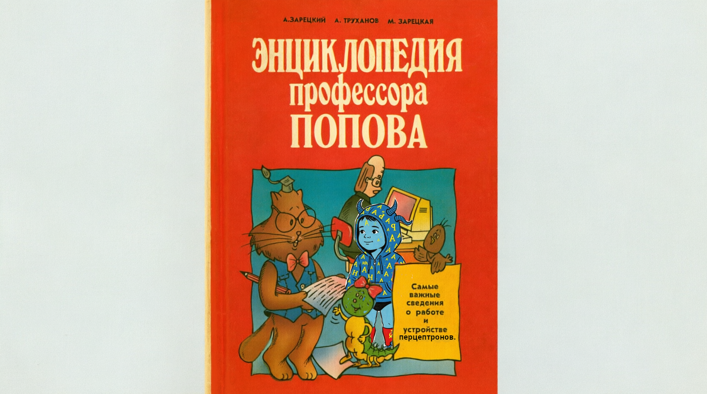

при участии вычислительной машины «Клавдий»
Часть девятая · Слово, эмбеддинг и контекстный БЕРТ
— Ну-с, товарищ. Прошлый раз мы научились заглядывать внутрь сети и увидели, что смыслы могут ютиться в одной комнате — это вы уже знаете как «суперпозицию». Сегодня применим всё это к задаче поважнее: к словам. Скажите, что есть слово для вычислительной машины?
— Полагаю, буквы. Как ещё запишешь слово в машину?
— Буквы — лишь обёртка, гражданин. Машина не понимает букв: она понимает числа. Поэтому каждое слово переводят в эмбеддинг*Вектор — столбец чисел, «паспорт» слова в многомерном пространстве. Похожие слова получают похожие паспорта. — столбец чисел, этакий «паспорт». Один паспорт — одно слово, и живёт он в многомерном пространстве, где похожие слова стоят рядом.
— Значит, у слова «ключ» — один паспорт на все случаи жизни?
— Вот тут-то и зарыта собака, голубчик! Старый способ так и делал: одно слово — один паспорт. И тогда «ключ» от двери и «ключ»-родник получали одинаковый паспорт, хотя это разные вещи. А контекстный БЕРТ*Модель, которая читает всё предложение целиком и выдаёт каждому слову эмбеддинг с учётом соседей. Поэтому одно и то же слово в разных контекстах получает разные векторы. читает всё предложение целиком и выдаёт паспорт с учётом соседей: «он повернул [ключ] в замке» даст один вектор, а «из-под камней бил [ключ]» — совсем другой.
За что отвечают? По отдельности — ни за что. Одно число ничего не значит, как одна координата GPS не говорит, где вы: смысл живёт в направлении, то есть в комбинации всех чисел сразу. И нельзя сказать «ось №7 отвечает за родник» — у обученной модели смыслы размазаны по всем осям. Именно поэтому и нужен SAE: он ищет такие направления, которые всё-таки отвечают за один смысл.
Какие значения бывают? Вещественные, обычно примерно от −10 до +10, но строгих границ нет — как и «правильных» значений: их выучила модель при обучении. Единственное место, где мы приводим числа к норме, — вход SAE: считаем среднее и разброс по каждому измерению и делаем \((x-\mathrm{MU})/\mathrm{SD}\), чтобы у каждого измерения было среднее 0 и разброс 1. Это нужно, чтобы λ значила одно и то же на разных моделях.
Каждое слово — точка в пространстве. Контекстный БЕРТ двигает эту точку в зависимости от соседей. Двигай бегунок — точка плавно едет по траектории через четыре зоны смыслов («ключ·дверной», «ключ·родник», «лук·овощ», «лук·оружие»), а под бегунком меняется предложение. Слово одно и то же, а вектор — разный: это и есть «контекстный эмбеддинг». Когда бегунок стоит между зонами, контекст смешанный — точка как раз на полпути.
— Взгляните на стенд: две «зоны смыслов», а слово-точка скачет между ними, стоит сменить контекст. Заметьте главное: это одно и то же слово, а векторы — разные. Вот зачем нужен контекст.
— А если контекст двусмысленный, куда денется точка?
— Вот именно, товарищ: точка ляжет где-то между зонами, в этакой «мгле». И это подводит нас прямиком к следующей части — к беде, которую и призвано лечить ваше домашнее задание.
Что такое эмбеддинг?
Чем контекстный БЕРТ отличается от старого способа?
Часть десятая · Суперпозиция в эмбеддингах: коммунальная квартира
— Теперь вспомним коммунальную квартиру, гражданин, но применим её к словам. У БЕРТа, что вы гоняете в тетрадке, всего 312 чисел на паспорт (у tiny2), а смыслов, которые надо хранить, — тысячи. Как уместить десять тысяч смыслов в триста двенадцать ящиков? А никак по-честному.
— И куда деваются лишние смыслы?
— Их складывают друг на друга, товарищ. Один ящик держит сразу «дверной» и «родник», а то и пяток смыслов. Это и есть суперпозиция*Когда на одну ось (измерение) навешано несколько смыслов сразу, потому что осей меньше, чем смыслов.: признаков больше, чем осей, и лежат они не перпендикулярно, а внаклон.
Плоскость — это две оси, то есть два измерения. Признаков же мы пытаемся разместить больше. Пока их 2 — они встают строго перпендикулярно (угол 90°), и читаются чисто. Как только признаков становится 3 и больше — перпендикулярно их поставить уже некуда, и они разворачиваются «звёздочкой»: теперь между любыми двумя есть угол. Это и есть суперпозиция: признаков больше, чем осей, поэтому они лежат внаклон. Чем ближе |cos| к единице, тем сильнее интерференция — активируешь один признак, а «тень» падает на соседние. Именно поэтому в домашке в сыром БЕРТе смыслы одного слова «слипаются».
— И вот беда: хотите вы прочитать один смысл, а он тянет за собой хвосты соседей. Профессор в прошлый раз рисовал «круги на воде» — бросили камень в один смысл, а волны пошли по всем. Считываете «родник», а вам подмешивается «дверной». Это зовётся интерференцией*Взаимная помеха смыслов: активируя один признак, вы невольно цепляете соседние, потому что они делят одну ось..
— Поэтому в домашнем задании слова «ключ», «лук», «коса» и выбраны? Они-то как раз полисемичные — много смыслов в одном слове.
— В самую точку, сударь. В сыром пространстве БЕРТа смыслы этих слов частично слипаются. «Ключ»-родник и «ключ»-дверной — оба где-то рядом, перекрываются. Ваша задача — их развести. Взгляните на стенд.
Слева два смысла слова «ключ» — «дверной» (синие) и «родник» (красные) — свалены на одну ось и перекрываются. Прочитать один, не задев другой, почти нельзя: это и есть «слипание» смыслов. Когда жмёте «Разжать SAE», разреженный автокодировщик раскладывает их по двум отдельным осям-признакам — и каждый смысл становится читаемым. Именно это и делает ваша тетрадка.
— Обратите внимание, гражданин: слева два смысла свалены в кучу, справа — разложены по разным полочкам. Та самая разница между «слипшимися» и «разведёнными» смыслами, которую вам предстоит измерить числами.
Что такое суперпозиция?
Из-за чего смыслы «цепляют» друг друга?
Часть одиннадцатая · Разреженный автокодировщик: разжимаем пространство
— Так чем же развести эти смыслы, профессор? Неужели вручную?
— Есть снаряд похитрее: разреженный автокодировщик*Сокращённо SAE (Sparse Autoencoder). Маленькая сеть, которую обучают поверх замороженного БЕРТа, чтобы переложить его эмбеддинг в разреженный код из многих признаков., или по-учёному SAE. Помните автокодировщик из прошлых бесед? Он сжимает и разжимает. А этот, наоборот, расширяет: берёт узкий вектор БЕРТа и раскладывает его в широкий словарь признаков, где каждый признак — свой смысл.
— Глядите на устройство, гражданин. Слева — вектор БЕРТа \(x\) (312 чисел). Внутри — широкий слой кодов*Скрытые активации SAE: одно число на каждый признак словаря. Большинство нулей, немногие активны — это и есть «разреженность». \(h\) (1024 числа, у вас dict_size). Справа — восстановленный вектор \(\hat{x}\). Всё держится на двух преобразованиях:
\(\hat{x} = W_d\,h + b_d\) — декодер: из кодов обратно в вектор.
— А зачем эта ReLU*Функция, оставляющая положительные числа и обнуляющая отрицательные: ReLU(z)=max(0,z). Именно она даёт разреженность — кучу нулей в коде. и что за «разреженный»?
— ReLU всё лишнее обнуляет, голубчик. Из тысячи признаков у слова активны лишь несколько, остальные — нули. Потому и «разреженный»: в любой момент горит малая горстка. Это и есть ключ к разгадке — если у «ключа»-родника горит признак №7, а у «ключа»-дверного — признак №812, смыслы разведены по разным полочкам.
— А учится SAE, как и всё в нашей науке, — спуском с горы (Часть нулевая). Гора тут о двух склонах:
— Первое слагаемое — «верни вектор как был», чтобы SAE ничего не потерял. Второе — «но не жги много признаков сразу», где \(\lambda\) — строгость надзирателя. Чем больше \(\lambda\), тем сильнее сеть прижимают к разреженности. Об этой ручке поговорим отдельно, она у вас главная.
— А почему нельзя просто взять больше измерений у БЕРТа? Зачем вся эта машинерия?
— Потому что БЕРТ уже обучен и заморожен, товарищ: переучивать его с нуля — и дорого, и небезопасно (потеряем всё, чему он научился). SAE же — лёгкая надстройка: она ничего не портит в БЕРТе, а лишь растолковывает его эмбеддинги в разреженном виде. Дешево, сердито и обратимо.
Зачем в SAE стоит ReLU?
Из чего состоит потеря SAE?
Часть двенадцатая · Метрики: как понять, что SAE сработал
— Профессор, а по каким числам судить, что разжатие удалось? В тетрадке таблиц много, а что они значат — туман.
— Разгоним и этот туман, гражданин. Метрик всего пять, и каждая отвечает на свой вопрос. Запишите-ка:
2. Средний L0 — сколько признаков горит у одного токена в среднем. Это «бережливость»: мало — разреженно.
3. Мёртвых признаков (%) — доля признаков, что никогда не загораются. Много мёртвых — словарь раздут впустую.
4. Точность разделения (%) — главная: насколько чисто SAE развёл два смысла одного слова. Больше — лучше.
5. Внедиагональный |cos| — «масса кругов на воде»: насколько направления признаков косо смотрят друг на друга. Меньше — чище.
— Разберём четвёртую подробнее, она в домашке самая важная. Берём слово «ключ», два смысла — «дверной» и «родник». На одной половине примеров ищем два самых контрастных признака: один сильнее горит у «дверного», другой — у «родника». А проверяем — на второй, невиданной половине: если признак №7 горит сильнее №812 — говорим «родник», иначе «дверной».
— А почему проверять надо на невиданной половине?
— Чтобы не обмануть самих себя, товарищ. Выбрали признак на тех же данных, на которых мерим, — получим завышенную точность, «подогнанную» под ответ. Честный судья проверяет на том, чего не видел. Так и здесь: половина — выбрать, половина — проверить.
— А пятая метрика, про косинусы, рисует ту самую Грам-матрицу*Таблица косинусов между направлениями признаков. Яркая диагональ и тёмные бока — признаки ортогональны, пространство чистое.. Если признаки смыслов смотрят строго врозь — диагональ яркая, бока тёмные. А если внаклон — по бокам «круги на воде», и чтение одного смысла цепляет другой. Хороший SAE делает бока тёмными.
Что показывает «необъяснённая дисперсия»?
Почему точность разделения считают на «невиданной» половине?
Часть тринадцатая · Ручки: что будет, если покрутить параметры
— А теперь главное, профессор: в тетрадке куча ручек — \(\lambda\), размер словаря, слой, эпохи. Что крутить и что случится?
— Расскажу по порядку, гражданин, и начну с самой капризной — \(\lambda\) (у вас в коде l1_coef). Это строгость надзирателя. Глядите на стенд и двигайте ручку.
Двигайте λ влево-вправо и следите за четырьмя кривыми. Реконструкция (синяя) при малом λ отличная, но L0 (зелёная) высок — горит много признаков, смыслы слиплись. При большом λ всё наоборот: L0 падает, признаки почти «моносемантичны», но реконструкция портится и мёртвые (красная) растут. Точность разделения (оранжевая) имеет пик — это и есть ваша рабочая точка: где-то посередине, где уже разделилось, но ещё не умерло.
Рост λ тянет вверх второе слагаемое, и сеть жертвует реконструкцией ради разреженности: L0 ↓, мёртвых ↑, fvu ↑. Слишком малое λ — наоборот, «ленивый» код без разреженности. Рабочая точка — у пика точности разделения.
— Заметили, гражданин, горб у оранжевой кривой? Это вся суть компромисса: λ слишком мала — смыслы не разделились (нет бережливости, всё горит); λ слишком велика — признаки поумирали, словарь оскудел. Истина — у вершины горба. В домашке вы этот горб и ищете «свипом по λ».
— А размер словаря dict_size?
— Это число полочек, товарищ. Возьмёте вдвое меньше — полочек не хватит, смыслы снова начнут тесниться (точность разделения просядет). Возьмёте вдвое больше — полочек избыток, и многие пустуют: вырастет доля мёртвых признаков*Признаки словаря, которые не активировались ни разу за обучение. Признак «словарь раздут».. Идеал — ровно столько, сколько смыслов, да с запасом на неучтённое.
— А layer_mode — «last» против «mean_last2»?
— Тут речь, голубчик, с какого этажа БЕРТа брать эмбеддинг. Последний слой («last») — самый «умный», но и самый запутанный: смыслы там сплелись крепче. Среднее двух последних («mean_last2») — чуть сглаженный, порой смыслы там развести легче. Сравните оба — вот и задание пятое.
Что происходит при слишком большом λ?
Что даёт вдвое больший dict_size?
Часть четырнадцатая · Практика: как сделать домашку, не утонув
— И последний вопрос, профессор: с чего начать тетрадку, чтобы всё вышло, а не развалилось?
— Вот вам рецепт, гражданин, в пять ходов. Ступайте по порядку — и ничего не упустите.
Шаг 1 (задание 1). Добавить в
POLY своё шестое слово: два смысла, не меньше 5–6 шаблонов на смысл, словоформа в скобках [косу]. Перезапустить — слово всплывёт во всех таблицах и на Грам-матрице.Шаг 2 (задание 2). Свип по λ: три значения вокруг рабочего (меньше / рабочая / больше) и подобрать диапазон так, чтобы был виден весь компромисс — от «слиплось» до «умерло». Выбрать вершину горба.
Шаг 3 (задание 3). Повторить лучший прогон при
dict_size вдвое меньше и вдвое больше. Записать, что стало с мёртвыми и точностью.Шаг 4 (задание 4). Взять 5 признаков из «топ-контекстов» и написать СЛОВАМИ, что каждый детектирует; пометить, моносемантичен ли.
Шаг 5 (задание 5). Сравнить
last и mean_last2 — по строке таблицы на режим.— И не забудьте, сударь, раздел «Выкладка» в конце: там фиксированная структура — гиперпараметры, метрики, свип, картинки «до/после», расшифровка признаков, выводы и творческая часть. Честность чисел ценится выше наворотов.
— Ну-с, товарищ, на сегодня довольно. Теперь вы знаете, что БЕРТ пакует смыслы впритирку, что SAE их разжимает, и какая ручка за что отвечает. Идите — и пусть ваши смыслы разделятся чисто, без кругов на воде.
— Благодарю, профессор! Теперь и тетрадка не страшна, и λ — не загадка. И вам, товарищ Клавдий, спасибо за стенды.

С чего начать тетрадку?
Рабочую λ выбирают…
Словарик для этой лекции
- Эмбеддинг
- Вектор-«паспорт» слова — точка в многомерном пространстве смыслов.
- Контекстный БЕРТ
- Модель, читающая предложение целиком и дающая слову вектор с учётом соседей.
- Размерность
- Сколько чисел в векторе: 312 у rubert-tiny2, 768 у rubert-base.
- Суперпозиция
- Когда смыслов больше, чем осей, и они делят измерения, лежа внаклон.
- Полисемантичность
- Одно направление хранит несколько смыслов сразу.
- Моносемантичность
- Один признак — один смысл (то, чего мы добиваемся).
- Интерференция
- «Круги на воде»: читая один признак, цепляешь хвосты соседей.
- SAE
- Разреженный автокодировщик — надстройка, раскладывающая вектор БЕРТа в разреженный словарь признаков.
- Разреженность
- Свойство кода, когда активна лишь малая горстка признаков, остальные — нули.
- λ (l1_coef)
- Строгость надзирателя: вес разреженности в потере; главная ручка компромисса.
- L0
- Среднее число активных признаков на токен (мера разреженности).
- Мёртвый признак
- Признак словаря, который ни разу не активировался — словарь раздут впустую.
- Необъяснённая дисперсия
- Доля смысла, которую SAE потерял при восстановлении (fvu).
- Точность разделения
- Насколько чисто SAE развёл два смысла одного слова; считается на невиданной половине.
- Грам-матрица
- Таблица косинусов между направлениями признаков; тёмные бока — пространство чистое.